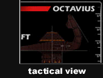
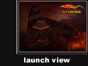
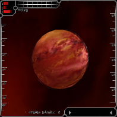
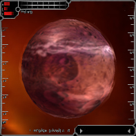
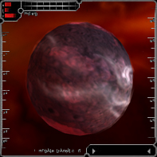
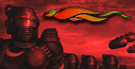

Octavius Societal Overview
Octavius is known for its commonly mercenary attitudes, where blood is often thinner than water. Other than genetics and bloodline, there is no unifying organization to Octavius as a whole. This gives rise to all manner of inner-faction power struggles, as various squads and rogue gangs constantly scramble for some semblance of control. The typical mindset of these groups is simply Might Makes Right. Perhaps this is why the weapons coming from Octavius Core (the seat of the system) are rarely paralleled in effectiveness and low power consumption. Ship speeds are slightly lower than other factions on average. A few inter-faction equipment trades can make these vessels some of the most feared in the universe. Civilian life is a constant battle for survival in Octavius. This might shed some light to the large number of volunteers for the TRI funded branch, as well as the tendency of most Octavians to trust no one.


Octavius is resource poor, often struggling through famines and food shortages. This drives the Octavian involvement in The Reconstruction Initiative, as resources must constantly be transported from external sectors of space to feed a largely broken civilization. Octavian pilots prefer to gain recognition for actions of personal glory and personal financial success. This includes combat, mining, trading, and exploration, fitting in nicely with TRI's objectives.
Rank Matrix
|
Octavius System Overview
The Octavius System is located between Solrain and Amananth, and consists of approximately 20 sectors. At present the Octavians have built 3 space stations - Octavius Core Station, Great Pillars Station, and Outpost Station. These stations are located near the dominant planets of the Octavius System - Ares Prime, Martius, and Cinatus.
|

Octavius Core: Ares Prime
Population: 4,000,000,000
Capital City: Trivera
Cities of note: Nova Carthago, Eiro
Corporations: Infinite Heavy Industries, Dorator, Aristo, Annihilitech, Octave Propulsion Labs
Only since Octavius joined TRI has Ares Prime become the premier planet of the Octavian Empire. Previously, planetary in fighting, civil and faction wars prevented the emergence of dominance on any of the three planets. Yet even today the political climate remains unstable and Ares Prime only barely holds on to its status, mainly due to its superior weapons manufacturing plants.
|

The Great Pillars: Martius
Population: 4,100,000,000 (disputed)
Capital City: Etruscera
Cities of note: Alva Longa, Perdios, Danubia
Corporations: Infinite Heavy Industries, Dorator, Aristo, Annihilitech, Octave Propulsion Labs
Martius has long been known for its martial academies where the best warriors are prepared for a life of combat and vigilance. It grudgingly recognizes Ares Prime's status as the main planet, although it's inhabitants are convinced of their own superiority.
|

Outpost: Cinatus
Population: 3,900,000,000 (disputed)
Capital City: Cina
Cities of Note: Lepsia, Bizyanth, Justos, Phyrra
Corporations: Infinite Heavy Industries, Dorator, Aristo, Annihilitech, Octave Propulsion Labs
The people of Cinatus (Cinati) take exception if referred to as the "third planet of the empire" - an attitude that might be justified. Cinatus has consistently provided the empire with the best military forces and is also the home of the Octavian heroes Enkido Khan, Hespenorr, Namtarr and Sandoz.
|
Octavius Political Overview
Governmental Structure: Hereditary Monarchy
Capital Planet: Ares Prime
The Octavian Empire is a triumvirate consisting of one emperor and two co-emperors, each one proclaiming himself to be the true ruler of the empire. This has lead to not one but three different seats of government - one on each planet.

Personnel Profile
Primary Political Leaders:
Emperor: Clements IV (m)
Co-Emperor: Septus (m)
Co-Emperor: Cineon (m)
Speakers:
Speaker (Ares Prime): Tesios Muca (m)
Speaker (Martius): Cicero Rnenta (m)
Speaker (Cinatus): Nestro Zagabi (m)
Station Governors:
Octavius Core: Hasdrubar Carto (m)
Great Pillars: Aggripus Montona (m)
Outpost: Zenobia Zvera (f)
|